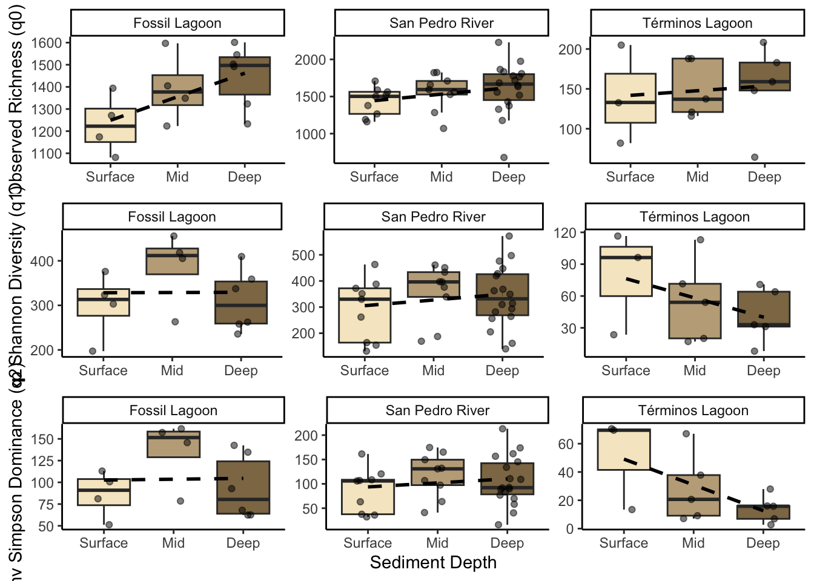

Alpha Diversity
Note
Alpha diversity indices were calculated with Hill numbers (q0 = observed richness, q1 = Shannon Exp and q2 = Inv Simpson) using hilldiv library. The significance of the observed differences among depth and mangrove systems was determined by employing a linear model, given the imbalanced sample numbers.
Load libraries and prepare data
#load data
physeq_qiime3 <- readRDS("rds/Depth_comparison/physeq_qiime3.rds")# Extract metadata and otu table from phyloseq object
otu_data <- otu_table(physeq_qiime3, taxa_are_rows = TRUE)
metadata <- as(sample_data(physeq_qiime3), "data.frame")01.Get Hill numbers
# Calculate hill numbers
q0 <- hill_div(otu_data, qvalue = 0)
q1 <- hill_div(otu_data, qvalue = 1)
q2 <- hill_div(otu_data, qvalue = 2)
# Merge metadata with Hill numbers
#library(tidyverse)
q012 <- cbind(q0, q1, q2) %>% as.data.frame() %>%
rownames_to_column(var = "SampleID")
# join
metadata_with_hill <- q012 %>%
inner_join(metadata, by = c("SampleID"="SampleID")) %>%
mutate(Depths = ifelse(Depths == "mid", "Mid", Depths))
# show
metadata_with_hill %>% head() SampleID q0 q1 q2 Collection_date depth ID Environmental_medium
1 S1A015 1266 330 106 2023-09-28 0-15 S1A sediment
2 S1A1530 1527 434 165 2023-09-28 16-30 S1A sediment
3 S1A3050 1558 428 162 2023-09-28 31-45 S1A sediment
4 S1A5075 1632 363 111 2023-09-28 50-70 S1A sediment
5 S1B07 1502 164 36 2023-09-28 0-15 S1B sediment
6 S1B2230 1821 461 150 2023-09-28 16-30 S1B sediment
Geographic.Location Study_zone Ecological_type season Mangrove.system
1 Mexico:Tabasco Rio San Pedro Fringe flood San Pedro River
2 Mexico:Tabasco Rio San Pedro Fringe flood San Pedro River
3 Mexico:Tabasco Rio San Pedro Fringe flood San Pedro River
4 Mexico:Tabasco Rio San Pedro Fringe flood San Pedro River
5 Mexico:Tabasco Rio San Pedro Fringe flood San Pedro River
6 Mexico:Tabasco Rio San Pedro Fringe flood San Pedro River
Depths
1 Surface
2 Mid
3 Deep
4 Deep
5 Surface
6 Mid#save table
write.table(metadata_with_hill, "Tables/Depth_comparison/Metadata_with_hill.tsv",
quote = FALSE, sep = "\t", row.names = TRUE, col.names=TRUE)02.Get Hill means
# Reorder q values
meta_qs <- metadata_with_hill %>%
pivot_longer(cols = q0:q2, names_to = "q", values_to = "value") %>%
filter(q %in% c("q0", "q1", "q2")) %>%
mutate(
qs = case_when(
q == "q0" ~ "q0=Observed",
q == "q1" ~ "q1=Exp Shannon",
q == "q2" ~ "q2=Inv Simpson",
))
#Get means of Hill numbers
means <- meta_qs %>% group_by(Depths, Mangrove.system, qs) %>%
summarise(means = mean(value, na.rm = TRUE),
sd = sd(value, na.rm = TRUE),
.groups = 'drop')
print(means)# A tibble: 27 × 5
Depths Mangrove.system qs means sd
<chr> <chr> <chr> <dbl> <dbl>
1 Deep Fossil Lagoon q0=Observed 1449. 141.
2 Deep Fossil Lagoon q1=Exp Shannon 310. 68.7
3 Deep Fossil Lagoon q2=Inv Simpson 93.8 36.5
4 Deep San Pedro River q0=Observed 1611. 341.
5 Deep San Pedro River q1=Exp Shannon 342. 117.
6 Deep San Pedro River q2=Inv Simpson 106. 49.9
7 Deep Términos Lagoon q0=Observed 152. 54.6
8 Deep Términos Lagoon q1=Exp Shannon 41.4 25.8
9 Deep Términos Lagoon q2=Inv Simpson 13.9 9.73
10 Mid Fossil Lagoon q0=Observed 1394. 156.
# ℹ 17 more rows#save table
write.table(means, "Tables/Depth_comparison/Hill_means_sd.tsv", quote = FALSE,
sep = "\t", row.names = TRUE, col.names=TRUE)
# group by mangrove system
means_mangrove_system_Depths <- meta_qs %>% group_by(Mangrove.system, Depths, qs) %>%
summarise(means = mean(value, na.rm = TRUE),
sd = sd(value, na.rm = TRUE),
.groups = 'drop')
print(means_mangrove_system_Depths)# A tibble: 27 × 5
Mangrove.system Depths qs means sd
<chr> <chr> <chr> <dbl> <dbl>
1 Fossil Lagoon Deep q0=Observed 1449. 141.
2 Fossil Lagoon Deep q1=Exp Shannon 310. 68.7
3 Fossil Lagoon Deep q2=Inv Simpson 93.8 36.5
4 Fossil Lagoon Mid q0=Observed 1394. 156.
5 Fossil Lagoon Mid q1=Exp Shannon 386. 84.4
6 Fossil Lagoon Mid q2=Inv Simpson 136. 38.8
7 Fossil Lagoon Surface q0=Observed 1230 134.
8 Fossil Lagoon Surface q1=Exp Shannon 300. 75.1
9 Fossil Lagoon Surface q2=Inv Simpson 86.5 26.9
10 San Pedro River Deep q0=Observed 1611. 341.
# ℹ 17 more rowswrite.table(means, "Tables/Depth_comparison/Hill_means_sd_mangrove_systemDepths.tsv", quote = FALSE,
sep = "\t", row.names = TRUE, col.names=TRUE)03.Get sequencing effort
Warning in rarecurve(mat, step = 100, sample = raremax, col = "green4", : most
observed count data have counts 1, but smallest count is 2
user system elapsed
18.128 0.811 18.960 # save
pdf("Figures/Depth_comparison/sample_effort.pdf")
system.time(rarecurve(mat, step = 100, sample = raremax, col = "green4",
label = FALSE))Warning in rarecurve(mat, step = 100, sample = raremax, col = "green4", : most
observed count data have counts 1, but smallest count is 2 user system elapsed
17.845 0.845 19.399 dev.off()quartz_off_screen
2 04. Check Alpha diversity correlation with sequencing depth
#Get effective reads
Effective_reads <- colSums(otu_data[-1, ])
metadata_with_hill$Effective_reads <- Effective_readsAlpha diversity depth correlation to q0 order
q0_vs_depth <- ggscatter(metadata_with_hill,
x = "Effective_reads", y = "q0",
xlab= "Sequencing depth (number of reads)",
ylab = "q=0", add = "reg.line",
add.params = list(color = "#114e9d", fill = "lightgray"),
conf.int = TRUE, # Add confidence interval
cor.coef = TRUE, # Add correlation coefficient.
cor.coeff.args = list(method = "pearson", label.x = 3, label.sep = "\n")
)+
theme(legend.title = element_blank(), legend.position = "none")Alpha diversity depth correlation to q1 order
q1_vs_depth <- ggscatter(metadata_with_hill,
x = "Effective_reads", y = "q1",
xlab= "Sequencing depth (number of reads)",
ylab = "q=1", add = "reg.line",
add.params = list(color = "#114e9d", fill = "lightgray"),
conf.int = TRUE, # Add confidence interval
cor.coef = TRUE, # Add correlation coefficient
cor.coeff.args = list(method = "pearson", label.x = 3, label.sep = "\n")) +
theme(legend.title = element_blank(),
legend.position = "none")Alpha diversity depth correlation to q2 order
q2_vs_depth <- ggscatter(metadata_with_hill,
x = "Effective_reads", y = "q2",
xlab= "Sequencing depth (number of reads)",
ylab = "q=2", add = "reg.line",
add.params = list(color = "#114e9d", fill = "lightgray"),
conf.int = TRUE, # Add confidence interval
cor.coef = TRUE, # Add correlation coefficient
cor.coeff.args = list(method = "pearson", label.x = 3, label.sep = "\n")) +
theme(legend.title = element_blank(),
legend.position = "none")#Combine plot
title_corr_plot <- ggdraw() +
draw_label("Alpha diversity depth correlation")
correlation_plot_q012 <- plot_grid(title_corr_plot,
q0_vs_depth,
q1_vs_depth,
q2_vs_depth,
ncol = 1,
rel_heights = c(0.15, 1, 1, 1))
correlation_plot_q012
# #save plot
ggsave("Figures/Depth_comparison/alpha_depth_correlation.pdf", correlation_plot_q012, width = 8, height = 8)05.Get significant differences for mangrove system
Important
Due to the positive correlation of the hill numbers and sequencing depth, we decided to include this variable in the linear model we used.
# Change fossil lagoon reference
metadata_with_hill$Mangrove.system <- relevel(metadata_with_hill$Mangrove.system, ref = "Fossil Lagoon")q0 Observed richness
Call:
lm(formula = q0 ~ log(Effective_reads) + Mangrove.system + Depths,
data = metadata_with_hill)
Residuals:
Min 1Q Median 3Q Max
-769.9 -95.4 21.1 103.9 488.9
Coefficients:
Estimate Std. Error t value Pr(>|t|)
(Intercept) -1714.1 896.0 -1.91 0.06077 .
log(Effective_reads) 268.7 76.4 3.52 0.00087 ***
Mangrove.systemSan Pedro River 158.0 66.4 2.38 0.02073 *
Mangrove.systemTérminos Lagoon -480.6 227.1 -2.12 0.03869 *
DepthsMid -40.6 63.5 -0.64 0.52500
DepthsSurface -127.0 66.1 -1.92 0.05970 .
---
Signif. codes: 0 '***' 0.001 '**' 0.01 '*' 0.05 '.' 0.1 ' ' 1
Residual standard error: 210 on 57 degrees of freedom
Multiple R-squared: 0.889, Adjusted R-squared: 0.879
F-statistic: 90.9 on 5 and 57 DF, p-value: <2e-16# check model reliability
shapiro.test(residuals(q0lm_ms))
Shapiro-Wilk normality test
data: residuals(q0lm_ms)
W = 1, p-value = 0.03#get differences with emmeans
q0_lm_means_ms <- emmeans(q0lm_ms, pairwise ~ Mangrove.system)
# get significance letters
#library(multcomp)
cld_results_ms <- cld(object = q0_lm_means_ms$emmeans, Letters = letters)
# Convert to data frame
q0_emmeans_df_ms <- as.data.frame(cld_results_ms)
q0_emmeans_df_ms Mangrove.system emmean SE df lower.CL upper.CL .group
Términos Lagoon 854 212.9 57 428 1281 a
Fossil Lagoon 1335 56.8 57 1221 1449 ab
San Pedro River 1493 38.2 57 1417 1569 b
Results are averaged over the levels of: Depths
Confidence level used: 0.95
P value adjustment: tukey method for comparing a family of 3 estimates
significance level used: alpha = 0.05
NOTE: If two or more means share the same grouping symbol,
then we cannot show them to be different.
But we also did not show them to be the same. # boxplot with significance
q0plot_ms <- ggplot(metadata_with_hill, aes(x = Mangrove.system, y = q0, fill = Mangrove.system)) +
geom_boxplot() +
geom_jitter(aes(fill = Mangrove.system), width = 0.1, alpha = 0.4) +
geom_text(data = q0_emmeans_df_ms, aes(y = emmean, label = .group), vjust = -3,
color = "black", fontface = "bold", position = position_dodge(0.9)) +
labs(title = "q0 = Observed", y = NULL, x = NULL) + #,
#caption = "letters by lm emmeans") +
theme_classic() + scale_fill_manual(values = loc_colors) +
theme(legend.position = "none", axis.text.x = element_blank())
q0plot_ms
q1 Diversity Exp Shannon
Call:
lm(formula = q1 ~ log(Effective_reads) + Mangrove.system + Depths,
data = metadata_with_hill)
Residuals:
Min 1Q Median 3Q Max
-191.79 -55.67 9.82 62.79 246.32
Coefficients:
Estimate Std. Error t value Pr(>|t|)
(Intercept) 491.59 413.10 1.19 0.2390
log(Effective_reads) -13.91 35.22 -0.39 0.6943
Mangrove.systemSan Pedro River 4.64 30.63 0.15 0.8800
Mangrove.systemTérminos Lagoon -316.12 104.69 -3.02 0.0038 **
DepthsMid 25.59 29.26 0.87 0.3855
DepthsSurface -27.34 30.48 -0.90 0.3735
---
Signif. codes: 0 '***' 0.001 '**' 0.01 '*' 0.05 '.' 0.1 ' ' 1
Residual standard error: 96.8 on 57 degrees of freedom
Multiple R-squared: 0.603, Adjusted R-squared: 0.568
F-statistic: 17.3 on 5 and 57 DF, p-value: 2.19e-10#check model reliability
shapiro.test(residuals(q1lm_ms))
Shapiro-Wilk normality test
data: residuals(q1lm_ms)
W = 1, p-value = 0.5# significance
q1_lm_means_ms <- emmeans(q1lm_ms, pairwise ~ Mangrove.system)
q1cld_results_ms <- cld(object = q1_lm_means_ms$emmeans, Letters = letters)
# Convert to data frame
q1_emmeans_df_ms <- as.data.frame(q1cld_results_ms)
q1_emmeans_df_ms Mangrove.system emmean SE df lower.CL upper.CL .group
Términos Lagoon 14 98.1 57 -182 211 a
Fossil Lagoon 330 26.2 57 278 383 b
San Pedro River 335 17.6 57 300 370 b
Results are averaged over the levels of: Depths
Confidence level used: 0.95
P value adjustment: tukey method for comparing a family of 3 estimates
significance level used: alpha = 0.05
NOTE: If two or more means share the same grouping symbol,
then we cannot show them to be different.
But we also did not show them to be the same. # boxplot
q1plot_ms <- ggplot(metadata_with_hill, aes(x = Mangrove.system , y = q1, fill = Mangrove.system)) +
geom_boxplot() +
geom_jitter(aes(fill = Mangrove.system), width = 0.1, alpha = 0.4) +
geom_text(data = q1_emmeans_df_ms, aes(y = emmean, label = .group), vjust = -5,
color = "black", fontface = "bold", position = position_dodge(0.9)) + labs(title = "q1 = Exp Shannon", y = NULL, x = NULL) + #,
#caption = "letters by lm emmeans") +
theme_classic() + scale_fill_manual(values = loc_colors) +
theme(legend.position = "none",
axis.text.y = element_text(size = 9),
axis.text.x = element_blank())
q1plot_ms
q2 Dominance Inv Simpson
Call:
lm(formula = q2 ~ log(Effective_reads) + Mangrove.system + Depths,
data = metadata_with_hill)
Residuals:
Min 1Q Median 3Q Max
-81.45 -28.67 -4.85 29.47 120.75
Coefficients:
Estimate Std. Error t value Pr(>|t|)
(Intercept) 310.12 177.54 1.75 0.0861 .
log(Effective_reads) -17.90 15.14 -1.18 0.2420
Mangrove.systemSan Pedro River 1.82 13.16 0.14 0.8903
Mangrove.systemTérminos Lagoon -127.49 44.99 -2.83 0.0064 **
DepthsMid 17.29 12.58 1.37 0.1746
DepthsSurface -9.19 13.10 -0.70 0.4856
---
Signif. codes: 0 '***' 0.001 '**' 0.01 '*' 0.05 '.' 0.1 ' ' 1
Residual standard error: 41.6 on 57 degrees of freedom
Multiple R-squared: 0.406, Adjusted R-squared: 0.354
F-statistic: 7.79 on 5 and 57 DF, p-value: 1.21e-05#check model reliability
shapiro.test(residuals(q2lm_ms))
Shapiro-Wilk normality test
data: residuals(q2lm_ms)
W = 1, p-value = 0.5# get significance
q2_lm_means_ms <- emmeans(q2lm_ms, pairwise ~ Mangrove.system)
q2cld_results_ms <- cld(object = q2_lm_means_ms$emmeans, Letters = letters)
# Convert to data frame
q2_emmeans_df_ms <- as.data.frame(q2cld_results_ms)
q2_emmeans_df_ms Mangrove.system emmean SE df lower.CL upper.CL .group
Términos Lagoon -21.5 42.2 57 -106.0 62.9 a
Fossil Lagoon 106.0 11.3 57 83.4 128.5 b
San Pedro River 107.8 7.6 57 92.6 122.9 b
Results are averaged over the levels of: Depths
Confidence level used: 0.95
P value adjustment: tukey method for comparing a family of 3 estimates
significance level used: alpha = 0.05
NOTE: If two or more means share the same grouping symbol,
then we cannot show them to be different.
But we also did not show them to be the same. # boxplot
q2plot_ms <- ggplot(metadata_with_hill, aes(x = Mangrove.system, y = q2, fill = Mangrove.system)) +
geom_boxplot() +
geom_jitter(aes(fill = Mangrove.system), width = 0.1, alpha = 0.4) +
geom_text(data = q2_emmeans_df_ms, aes(y = emmean, label = .group), vjust = -5,
color = "black", fontface = "bold", position = position_dodge(0.9)) +
labs(title = "q2 = Inv Simpson", y = NULL, x = NULL,
caption = "lm (Depth sequencing, Mangrove system and Depths") +
theme_classic() + scale_fill_manual(values = loc_colors) +
theme(legend.position = "none",
axis.text.y = element_text(size = 9),
axis.text.x = element_text(size = 9),
plot.caption = element_text(size = 7, face = "italic"))
q2plot_ms
Combine plot
#Combine alpha diversity plots
ytitle_ms <- ggdraw() + draw_label("Effective number of ASVs",
angle = 90, size = 14 )
q012plot_ms <- plot_grid(q0plot_ms, q1plot_ms, q2plot_ms, ncol = 1)
q012y_plot_ms <- plot_grid(ytitle_ms, q012plot_ms, ncol = 2, rel_widths = c(0.05, 1))
# show
q012y_plot_ms
# save
ggsave("Figures/Depth_comparison/alphadiv_per_MS.pdf",
q012y_plot_ms, width = 6.3, height = 9.9)Save rds for alpha diversity plot
saveRDS(q012y_plot_ms, "rds/Depth_comparison/alpha_diversity_MS_plot.rds")06.Get significant differences for Depths
q0 Observed richness
Call:
lm(formula = q0 ~ log(Effective_reads) + Depths + Mangrove.system,
data = metadata_with_hill)
Residuals:
Min 1Q Median 3Q Max
-769.9 -95.4 21.1 103.9 488.9
Coefficients:
Estimate Std. Error t value Pr(>|t|)
(Intercept) -1841.1 887.5 -2.07 0.04255 *
log(Effective_reads) 268.7 76.4 3.52 0.00087 ***
DepthsDeep 127.0 66.1 1.92 0.05970 .
DepthsMid 86.4 72.8 1.19 0.24039
Mangrove.systemSan Pedro River 158.0 66.4 2.38 0.02073 *
Mangrove.systemTérminos Lagoon -480.6 227.1 -2.12 0.03869 *
---
Signif. codes: 0 '***' 0.001 '**' 0.01 '*' 0.05 '.' 0.1 ' ' 1
Residual standard error: 210 on 57 degrees of freedom
Multiple R-squared: 0.889, Adjusted R-squared: 0.879
F-statistic: 90.9 on 5 and 57 DF, p-value: <2e-16# check model reliability
shapiro.test(residuals(q0lm_depth))
Shapiro-Wilk normality test
data: residuals(q0lm_depth)
W = 1, p-value = 0.03#get differences with emmeans
q0_lm_means_depth <- emmeans(q0lm_depth, pairwise ~ Depths)
# get significance letters
q0cld_results_depth <- cld(object = q0_lm_means_depth$emmeans, Letters = letters)
# Convert to data frame
q0_emmeans_df_depth <- as.data.frame(q0cld_results_depth)
q0_emmeans_df_depth Depths emmean SE df lower.CL upper.CL .group
Surface 1156 86.3 57 983 1329 a
Mid 1243 77.8 57 1087 1398 a
Deep 1283 71.8 57 1140 1427 a
Results are averaged over the levels of: Mangrove.system
Confidence level used: 0.95
P value adjustment: tukey method for comparing a family of 3 estimates
significance level used: alpha = 0.05
NOTE: If two or more means share the same grouping symbol,
then we cannot show them to be different.
But we also did not show them to be the same. # boxplot with significance
q0plot_depth <- ggplot(metadata_with_hill, aes(x = Depths, y = q0, fill = Depths)) +
geom_boxplot() +
#geom_jitter(aes(fill = Mangrove.system), width = 0.1, alpha = 0.4) +
geom_text(data = q0_emmeans_df_depth, aes(y = emmean, label = .group), vjust = -3,
color = "black", fontface = "bold", position = position_dodge(0.9)) +
labs(title = "q0 = Observed", y = NULL, x = NULL) + #,
#caption = "letters by lm emmeans") +
theme_classic() + scale_fill_manual(values = depth_colors) +
theme(legend.position = "none", axis.text.x = element_blank())
q0plot_depth
q1 Diversity Exp Shannon
Call:
lm(formula = q1 ~ log(Effective_reads) + Depths + Mangrove.system,
data = metadata_with_hill)
Residuals:
Min 1Q Median 3Q Max
-191.79 -55.67 9.82 62.79 246.32
Coefficients:
Estimate Std. Error t value Pr(>|t|)
(Intercept) 464.26 409.15 1.13 0.2613
log(Effective_reads) -13.91 35.22 -0.39 0.6943
DepthsMid 52.93 33.58 1.58 0.1206
DepthsDeep 27.34 30.48 0.90 0.3735
Mangrove.systemSan Pedro River 4.64 30.63 0.15 0.8800
Mangrove.systemTérminos Lagoon -316.12 104.69 -3.02 0.0038 **
---
Signif. codes: 0 '***' 0.001 '**' 0.01 '*' 0.05 '.' 0.1 ' ' 1
Residual standard error: 96.8 on 57 degrees of freedom
Multiple R-squared: 0.603, Adjusted R-squared: 0.568
F-statistic: 17.3 on 5 and 57 DF, p-value: 2.19e-10#check model reliability
shapiro.test(residuals(q1lm_depth))
Shapiro-Wilk normality test
data: residuals(q1lm_depth)
W = 1, p-value = 0.5# significance
q1_lm_means_depth <- emmeans(q1lm_depth, pairwise ~ Depths)
q1cld_results_depth <- cld(object = q1_lm_means_depth$emmeans, Letters = letters)
# Convert to data frame
q1_emmeans_df_depth <- as.data.frame(q1cld_results_depth)
q1_emmeans_df_depth Depths emmean SE df lower.CL upper.CL .group
Surface 200 39.8 57 120 279 a
Deep 227 33.1 57 161 293 a
Mid 253 35.9 57 181 324 a
Results are averaged over the levels of: Mangrove.system
Confidence level used: 0.95
P value adjustment: tukey method for comparing a family of 3 estimates
significance level used: alpha = 0.05
NOTE: If two or more means share the same grouping symbol,
then we cannot show them to be different.
But we also did not show them to be the same. # boxplot
q1plot_depth <- ggplot(metadata_with_hill, aes(x = Depths , y = q1, fill = Depths)) +
geom_boxplot() +
#geom_jitter(aes(fill = Mangrove.system), width = 0.1, alpha = 0.4) +
geom_text(data = q1_emmeans_df_depth, aes(y = emmean, label = .group), vjust = -5,
color = "black", fontface = "bold", position = position_dodge(0.9)) + labs(title = "q1 = Exp Shannon", y = NULL, x = NULL) + #,
#caption = "letters by lm emmeans") +
theme_classic() + scale_fill_manual(values = depth_colors) +
theme(legend.position = "none",
axis.text.y = element_text(size = 9),
axis.text.x = element_blank())
q1plot_depth
q2 Dominance Inv Simpson
Call:
lm(formula = q2 ~ log(Effective_reads) + Depths + Mangrove.system,
data = metadata_with_hill)
Residuals:
Min 1Q Median 3Q Max
-81.45 -28.67 -4.85 29.47 120.75
Coefficients:
Estimate Std. Error t value Pr(>|t|)
(Intercept) 300.92 175.85 1.71 0.0925 .
log(Effective_reads) -17.90 15.14 -1.18 0.2420
DepthsMid 26.48 14.43 1.83 0.0718 .
DepthsDeep 9.19 13.10 0.70 0.4856
Mangrove.systemSan Pedro River 1.82 13.16 0.14 0.8903
Mangrove.systemTérminos Lagoon -127.49 44.99 -2.83 0.0064 **
---
Signif. codes: 0 '***' 0.001 '**' 0.01 '*' 0.05 '.' 0.1 ' ' 1
Residual standard error: 41.6 on 57 degrees of freedom
Multiple R-squared: 0.406, Adjusted R-squared: 0.354
F-statistic: 7.79 on 5 and 57 DF, p-value: 1.21e-05#check model reliability
shapiro.test(residuals(q2lm_depth))
Shapiro-Wilk normality test
data: residuals(q2lm_depth)
W = 1, p-value = 0.5# get significance
q2_lm_means_depth <- emmeans(q2lm_depth, pairwise ~ Depths)
q2cld_results_depth <- cld(object = q2_lm_means_depth$emmeans, Letters = letters)
# Convert to data frame
q2_emmeans_df_depth <- as.data.frame(q2cld_results_depth)
q2_emmeans_df_depth Depths emmean SE df lower.CL upper.CL .group
Surface 52.2 17.1 57 17.9 86.4 a
Deep 61.4 14.2 57 32.9 89.9 a
Mid 78.7 15.4 57 47.8 109.5 a
Results are averaged over the levels of: Mangrove.system
Confidence level used: 0.95
P value adjustment: tukey method for comparing a family of 3 estimates
significance level used: alpha = 0.05
NOTE: If two or more means share the same grouping symbol,
then we cannot show them to be different.
But we also did not show them to be the same. # boxplot
q2plot_depth <- ggplot(metadata_with_hill, aes(x = Depths, y = q2, fill = Depths)) +
geom_boxplot() +
#geom_jitter(aes(fill = Mangrove.system), width = 0.1, alpha = 0.4) +
geom_text(data = q2_emmeans_df_depth, aes(y = emmean, label = .group), vjust = -5,
color = "black", fontface = "bold", position = position_dodge(0.9)) +
labs(title = "q2 = Inv Simpson", y = NULL, x = NULL,
caption = "lm (Depth sequencing, Dephts and Mangrove system") +
theme_classic() + scale_fill_manual(values = depth_colors) +
theme(legend.position = "none",
axis.text.y = element_text(size = 9),
axis.text.x = element_text(size = 9),
plot.caption = element_text(size = 7, face = "italic"))
q2plot_depth
Combine plot
#Combine alpha diversity plots
ytitle_depth <- ggdraw() + draw_label("Effective number of ASVs",
angle = 90, size = 14 )
q012plot_depth <- plot_grid(q0plot_depth, q1plot_depth, q2plot_depth,
labels = c("A)", "", ""), ncol = 1)
q012y_plot_depth <- plot_grid(ytitle_depth, q012plot_depth, ncol = 2, rel_widths = c(0.05, 1))
# show
q012y_plot_depth
# save
ggsave("Figures/Depth_comparison/alphadiv_per_Depths.pdf",
q012y_plot_depth, width = 6.3, height = 9.9)Save rds for Depths alpha diversity plot
saveRDS(q012y_plot_depth, "rds/Depth_comparison/alpha_diversity_Depths_plot.rds")07. Get depth differences by system
q0
# factor
metadata_with_hill$Depths <- factor(metadata_with_hill$Depths, levels = c("Surface", "Mid", "Deep"))
#plot q0
q0_depth_system <- ggplot(metadata_with_hill, aes(x = Depths, y = q0, fill = Depths)) +
geom_boxplot(outlier.shape = NA, alpha = 0.9) +
geom_jitter(width = 0.2, alpha = 0.5) +
facet_wrap(~Mangrove.system, scales = "free_y") +
geom_smooth(aes(group = 1), method = "lm", se = FALSE, color = "black", linetype = "dashed") +
theme_classic() +
scale_fill_manual(values = depth_colors) +
labs(title = NULL,
x = NULL, y = "Observed Richness (q0)") +
theme(legend.position = "none")q1
#plot
q1_depth_system <- ggplot(metadata_with_hill, aes(x = Depths, y = q1, fill = Depths)) +
geom_boxplot(outlier.shape = NA, alpha = 0.9) +
geom_jitter(width = 0.2, alpha = 0.5) +
facet_wrap(~Mangrove.system, scales = "free_y") +
geom_smooth(aes(group = 1), method = "lm", se = FALSE, color = "black", linetype = "dashed") +
theme_classic() +
scale_fill_manual(values = depth_colors) +
labs(title = NULL,
x = NULL, y = "Exp Shannon Diversity (q1)") +
theme(legend.position = "none")q2
q2_depth_system <- ggplot(metadata_with_hill, aes(x = Depths, y = q2, fill = Depths)) +
geom_boxplot(outlier.shape = NA, alpha = 0.9) +
geom_jitter(width = 0.2, alpha = 0.5) +
facet_wrap(~Mangrove.system, scales = "free_y") +
geom_smooth(aes(group = 1), method = "lm", se = FALSE, color = "black", linetype = "dashed") +
theme_classic() +
scale_fill_manual(values = depth_colors) +
labs(title = NULL,
x = "Sediment Depth", y = "Inv Simpson Dominance (q2)") +
theme(legend.position = "none")#Combine alpha diversity plots
q012_depth_system_plot <- plot_grid(q0_depth_system,
q1_depth_system,
q2_depth_system,
ncol = 1)
# show
q012_depth_system_plot
library(multcomp)
library(multcompView)
# q0
q0_model_int <- lm(q0 ~ log(Effective_reads) + Depths * Mangrove.system,
data = metadata_with_hill)
q0_nested_means <- emmeans(q0_model_int, pairwise ~ Mangrove.system | Depths)
q0_cld_depth_by_system <- cld(object = q0_nested_means$emmeans, Letters = letters)
as.data.frame(q0_cld_depth_by_system)Depths = Surface:
Mangrove.system emmean SE df lower.CL upper.CL .group
Términos Lagoon 969 257.8 53 452 1486 a
Fossil Lagoon 1187 107.1 53 972 1402 a
San Pedro River 1409 71.2 53 1267 1552 a
Depths = Mid:
Mangrove.system emmean SE df lower.CL upper.CL .group
Términos Lagoon 900 226.2 53 446 1354 a
Fossil Lagoon 1347 107.2 53 1132 1562 ab
San Pedro River 1516 72.0 53 1371 1660 b
Depths = Deep:
Mangrove.system emmean SE df lower.CL upper.CL .group
Términos Lagoon 898 225.2 53 447 1350 a
Fossil Lagoon 1440 86.9 53 1265 1614 ab
San Pedro River 1545 53.4 53 1438 1652 b
Confidence level used: 0.95
P value adjustment: tukey method for comparing a family of 3 estimates
significance level used: alpha = 0.05
NOTE: If two or more means share the same grouping symbol,
then we cannot show them to be different.
But we also did not show them to be the same. # q1
q1_model_int <- lm(q1 ~ log(Effective_reads) + Mangrove.system * Depths,
data = metadata_with_hill)
q1_nested_means <- emmeans(q1_model_int, pairwise ~ Mangrove.system | Depths)
q1_cld_depth_by_system <- cld(object = q1_nested_means$emmeans, Letters = letters)
as.data.frame(q1_cld_depth_by_system)Depths = Surface:
Mangrove.system emmean SE df lower.CL upper.CL .group
Términos Lagoon 40 119.2 53 -200 279 a
San Pedro River 292 32.9 53 226 358 a
Fossil Lagoon 302 49.5 53 203 401 a
Depths = Mid:
Mangrove.system emmean SE df lower.CL upper.CL .group
Términos Lagoon 20 104.6 53 -190 230 a
San Pedro River 359 33.3 53 292 426 b
Fossil Lagoon 388 49.6 53 288 487 b
Depths = Deep:
Mangrove.system emmean SE df lower.CL upper.CL .group
Términos Lagoon 6 104.1 53 -203 215 a
Fossil Lagoon 311 40.2 53 230 391 b
San Pedro River 345 24.7 53 295 394 b
Confidence level used: 0.95
P value adjustment: tukey method for comparing a family of 3 estimates
significance level used: alpha = 0.05
NOTE: If two or more means share the same grouping symbol,
then we cannot show them to be different.
But we also did not show them to be the same. # q2
q2_model_int <- lm(q2 ~ log(Effective_reads) + Mangrove.system * Depths,
data = metadata_with_hill)
q2_nested_means <- emmeans(q2_model_int, pairwise ~ Mangrove.system | Depths)
q2_cld_depth_by_system <- cld(object = q2_nested_means$emmeans, Letters = letters)
as.data.frame(q2_cld_depth_by_system)Depths = Surface:
Mangrove.system emmean SE df lower.CL upper.CL .group
Términos Lagoon 2.3 50.3 53 -98.6 103.1 a
San Pedro River 87.0 13.9 53 59.2 114.8 a
Fossil Lagoon 89.1 20.9 53 47.2 130.9 a
Depths = Mid:
Mangrove.system emmean SE df lower.CL upper.CL .group
Términos Lagoon -15.9 44.1 53 -104.4 72.6 a
San Pedro River 120.5 14.0 53 92.4 148.7 b
Fossil Lagoon 138.5 20.9 53 96.6 180.5 b
Depths = Deep:
Mangrove.system emmean SE df lower.CL upper.CL .group
Términos Lagoon -30.1 43.9 53 -118.2 57.9 a
Fossil Lagoon 94.4 17.0 53 60.4 128.4 b
San Pedro River 110.1 10.4 53 89.3 131.0 b
Confidence level used: 0.95
P value adjustment: tukey method for comparing a family of 3 estimates
significance level used: alpha = 0.05
NOTE: If two or more means share the same grouping symbol,
then we cannot show them to be different.
But we also did not show them to be the same. Supplementary
library(dplyr)
library(broom)
# Extract anova by depth
tableS5_global <- bind_rows(
as.data.frame(anova(q0lm_depth)) %>% mutate(Metric = "q0", Factor = rownames(.)),
as.data.frame(anova(q1lm_depth)) %>% mutate(Metric = "q1", Factor = rownames(.)),
as.data.frame(anova(q2lm_depth)) %>% mutate(Metric = "q2", Factor = rownames(.))
) %>%
filter(!Factor %in% c("Residuals", "Total")) %>%
dplyr::select(Metric, Factor, `F value`, p_value = `Pr(>F)`) %>%
mutate(across(where(is.numeric), ~ round(., 10)))
tableS5_global <- tableS5_global %>%
`rownames<-`(NULL)
# show
tableS5_global Metric Factor F value p_value
1 q0 log(Effective_reads) 439.976 0.00e+00
2 q0 Depths 1.462 2.40e-01
3 q0 Mangrove.system 5.882 4.76e-03
4 q1 log(Effective_reads) 75.634 0.00e+00
5 q1 Depths 0.729 4.87e-01
6 q1 Mangrove.system 4.725 1.26e-02
7 q2 log(Effective_reads) 28.073 1.96e-06
8 q2 Depths 1.289 2.84e-01
9 q2 Mangrove.system 4.159 2.06e-02# save
write.csv(tableS5_global, "Tables/Depth_comparison/Supplementary_Table_S5_Depth_ANOVA.csv", row.names = FALSE)library(dplyr)
# join CLD dataframe
tableS7_final <- bind_rows(
as.data.frame(q0_cld_depth_by_system) %>% mutate(Metric = "q0"),
as.data.frame(q1_cld_depth_by_system) %>% mutate(Metric = "q1"),
as.data.frame(q2_cld_depth_by_system) %>% mutate(Metric = "q2")) %>%
dplyr::select(Metric, Mangrove.system, Depths, emmean, SE, lower.CL, upper.CL, Significance = .group) %>%
mutate(across(where(is.numeric), ~ round(., 3)))
# clean
rownames(tableS7_final) <- NULL
#show
tableS7_final Metric Mangrove.system Depths emmean SE lower.CL upper.CL Significance
1 q0 Términos Lagoon Surface 968.69 257.8 451.5 1485.9 a
2 q0 Fossil Lagoon Surface 1187.12 107.1 972.4 1401.8 a
3 q0 San Pedro River Surface 1409.44 71.2 1266.7 1552.2 a
4 q0 Términos Lagoon Mid 900.20 226.2 446.5 1353.9 a
5 q0 Fossil Lagoon Mid 1346.91 107.2 1131.9 1561.9 ab
6 q0 San Pedro River Mid 1515.61 72.0 1371.2 1660.0 b
7 q0 Términos Lagoon Deep 898.42 225.2 446.8 1350.1 a
8 q0 Fossil Lagoon Deep 1439.51 86.9 1265.2 1613.9 ab
9 q0 San Pedro River Deep 1544.82 53.4 1437.8 1651.8 b
10 q1 Términos Lagoon Surface 39.67 119.2 -199.5 278.8 a
11 q1 San Pedro River Surface 291.63 32.9 225.6 357.6 a
12 q1 Fossil Lagoon Surface 301.98 49.5 202.7 401.3 a
13 q1 Términos Lagoon Mid 19.75 104.6 -190.0 229.5 a
14 q1 San Pedro River Mid 358.93 33.3 292.2 425.7 b
15 q1 Fossil Lagoon Mid 387.78 49.6 288.4 487.2 b
16 q1 Términos Lagoon Deep 6.24 104.1 -202.6 215.1 a
17 q1 Fossil Lagoon Deep 310.81 40.2 230.2 391.4 b
18 q1 San Pedro River Deep 344.64 24.7 295.2 394.1 b
19 q2 Términos Lagoon Surface 2.28 50.3 -98.6 103.1 a
20 q2 San Pedro River Surface 86.99 13.9 59.2 114.8 a
21 q2 Fossil Lagoon Surface 89.05 20.9 47.2 130.9 a
22 q2 Términos Lagoon Mid -15.93 44.1 -104.4 72.6 a
23 q2 San Pedro River Mid 120.52 14.0 92.4 148.7 b
24 q2 Fossil Lagoon Mid 138.53 20.9 96.6 180.5 b
25 q2 Términos Lagoon Deep -30.14 43.9 -118.2 57.9 a
26 q2 Fossil Lagoon Deep 94.39 17.0 60.4 128.4 b
27 q2 San Pedro River Deep 110.14 10.4 89.3 131.0 b# save
write.csv(tableS7_final, "Tables/Depth_comparison/Supplementary_Table_S5_Alpha_Depth_CLD.csv", row.names = FALSE)